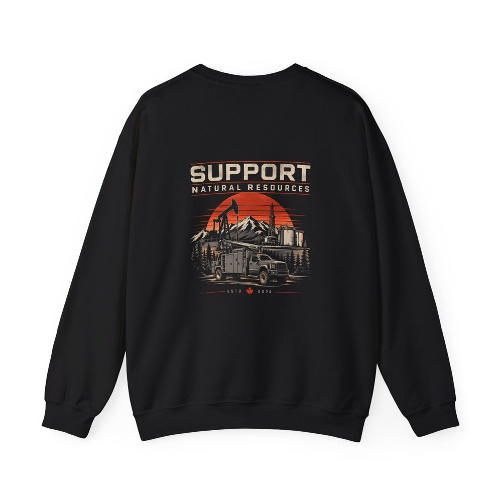
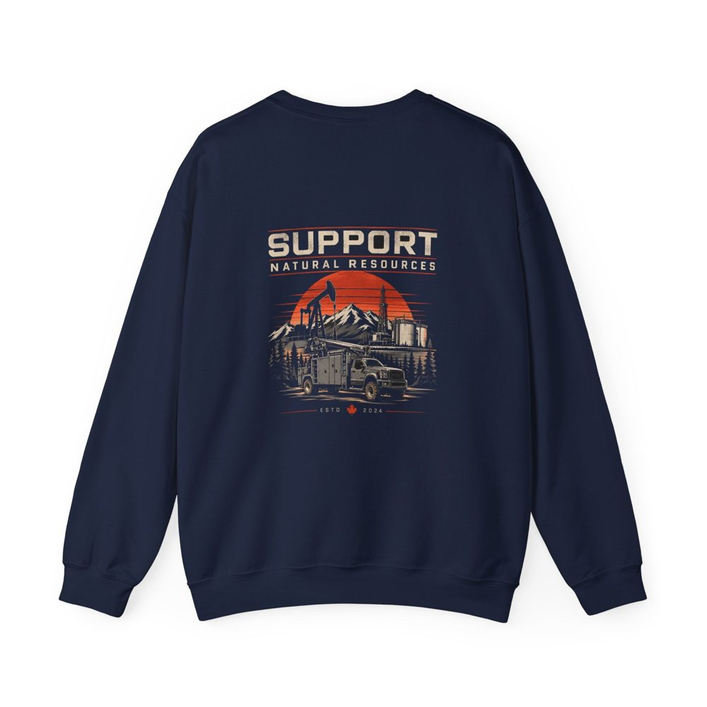
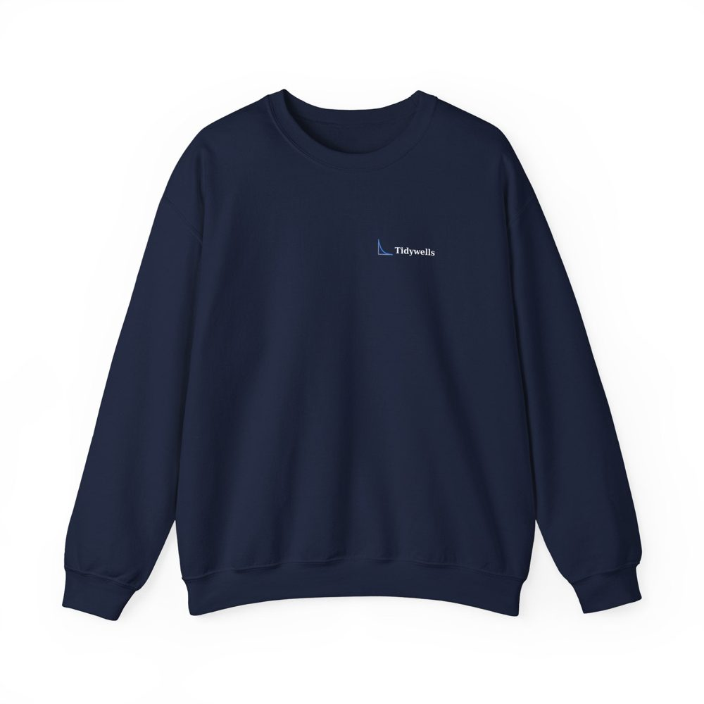

Shop › Crewneck






Support Natural Resources crewneck
A pumpjack, a rig and a service truck under a rust-orange sun, Support Natural Resources across the back.
CAD $59.99
Opening soon. Get an email when the shop opens.
About this design
A bold Support Natural Resources graphic across the back: a pumpjack, a drilling rig, storage tanks, mountains and pines, with a service truck in front, under a rust-orange sun. A small Tidywells decline-curve logo sits on the left chest. Available in black and navy. A heavy blend crewneck, 50% cotton and 50% polyester. Original artwork, no company names or logos.
True to size. Order the size you normally wear; the size guide below shows the flat measurements.
Details
- Large design printed on the back, small Tidywells logo on the left chest
- Heavy blend crewneck, 50% cotton and 50% polyester
- Original artwork, no company names or logos
- Garment colours and sizes are set in the store listing
Size guide
| Size | Chest width (in) | Chest width (cm) | Length (in) | Length (cm) |
|---|---|---|---|---|
| S | 20 | 51 | 26 | 66 |
| M | 22 | 56 | 27 | 69 |
| L | 24 | 61 | 28 | 71 |
| XL | 26 | 66 | 29 | 74 |
| 2XL | 28 | 71 | 30 | 76 |
| 3XL | 30 | 76 | 31 | 79 |
Typical unisex fit. Measurements are approximate and vary slightly by garment maker; the final size guide appears in the store listing. Between sizes, size up for a relaxed fit.
Prices in Canadian dollars; shipping and tax are added at checkout and the store confirms the final price. Tidywells is not affiliated with any regulator or operator.